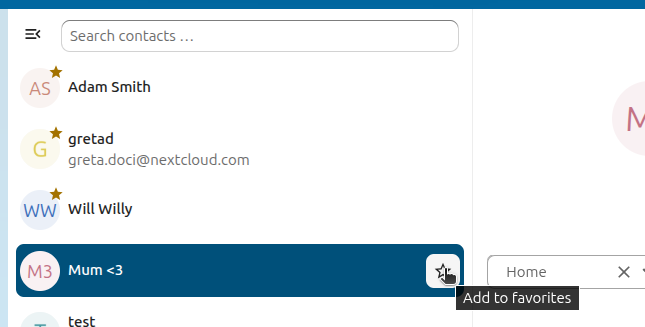

連絡先アプリの使い方
連絡先アプリは、Nextcloud 35 ではデフォルトで有効になっておらず、App Storeから別途インストールする必要があります。
The Nextcloud Contacts app is similar to other mobile contact applications, but with more functionality. This section covers the basic features that will help you maintain your address book in the application.
以下では、連絡先の追加・編集・削除、連絡先画像のアップロード、アドレス帳の管理方法について説明します。
連絡先の追加
連絡先アプリに初めてアクセスしたとき、あなたが閲覧可能なすべてのユーザーを含むシステムアドレス帳と、空のデフォルトアドレス帳が利用可能になります。

※デフォルトアドレス帳（空）
アドレス帳に連絡先を追加するには、次のいずれかの方法を使えます：
仮想連絡先ファイル（VCF/vCardファイル）を使って連絡先をインポートする
連絡先を手動で追加する
連絡先を追加する最も速い方法は、仮想連絡先ファイル（VCF/vCardファイル）を使うことです。
仮想連絡先のインポート
VCF/vCardファイルを使って連絡先をインポートする方法：
An Import contacts button is shown when you have no contacts yet.
左サイドバーの一番下にある歯車アイコンの隣に「設定」があります：

歯車ボタンをクリックすると、連絡先アプリの「インポート」ボタンが表示されます：

注釈
連絡先アプリは、vCardバージョン3.0と4.0のみインポートに対応しています。
「インポート」ボタンをクリックし、VCF/vCardファイルをアップロードしてください。
インポートが完了すると、新しい連絡先がアドレス帳に表示されます。
連絡先の手動追加
仮想連絡先のインポートができない場合は、連絡先アプリで連絡先を手動で追加することができます。
新しい連絡先を作成する手順：
「+新規連絡先」ボタンをクリックします。
編集ビュー構成がアプリケーションビュー欄で開きます：

新しい連絡先情報を入力し「保存」をクリックします。
追加したデータが表示モードに反映されます

連絡先情報の編集・削除
連絡先アプリでは連絡先情報の編集や削除ができます。
連絡先情報を編集または削除するには：
変更したい連絡先を選択します。
編集または削除したい項目を選択します。
内容を修正するか、ゴミ箱アイコンをクリックしてください。
連絡先情報の変更や削除は即座に反映されます。
すべての連絡先が編集可能とは限りません。システムアドレス帳では他のユーザーのデータは変更できず、自分自身のデータのみ編集できます。自分のデータはユーザ設定（user settings）でも編集できます。
連絡先画像
新しい連絡先の画像を追加するには「アップロード」ボタンをクリックします：

連絡先画像を設定すると、このように表示されます：

画像を新たにアップロードしたい場合や、削除・全画面表示・ダウンロードする場合は、連絡先画像をクリックして各オプションを表示させてください：

管理者がグループウェアの管理設定でソーシャルメディアからの更新を許可している場合、ユーザは連絡先画像をソーシャルネットワークから直接取得できます。その場合、連絡先にはソーシャルメディア欄にユーザ名を登録しておく必要があります。対応するソーシャルネットワークごとに、ダウンロード項目が追加されます。現在、以下のソーシャルネットワークがサポートされています：
Instagram
Mastodon
Tumblr
Diaspora
Xing
Telegram
Gravatar
ソーシャルアバターは、各ソーシャルネットワークにログインしなくても公開されている場合のみ取得されます。連絡先ページのユーザ設定でソーシャルメディアからの自動更新を有効化できます。この設定により、アバターは週次でソーシャルプロフィールの情報で自動的に更新されます。ソーシャルネットワークは上記の順序でチェックされます。
複数の連絡先をまとめて管理する
連絡先アプリでは、複数の連絡先を選択して一括操作できます。複数選択するには、各連絡先のプロフィール画像を個別にクリックするか、最初の連絡先の画像をクリックしてShiftキーを押しながら別の連絡先をクリックし、その間の連絡先をまとめて選択します。
これにより、連絡先リストの上部に選択した連絡先への操作メニューが表示されます：

バッチモードでは、(×)アイコンですべての連絡先の選択を解除、ゴミ箱アイコンで全選択した連絡先を削除できます。
注釈
連絡先によっては編集や削除ができない場合があります（たとえば読み取り専用のアドレス帳など）。その場合、該当操作は無効になります。
重複連絡先の統合
連絡先を統合するには、2件の連絡先を選択してリスト上部の「連絡先を統合」アイコンをクリックします。統合用ダイアログが開き、両方の連絡先の詳細が並べて表示されるので、統合後に保持する情報を選択できます。
円形のラジオボタンで選択する項目は1つしか値を持てません（例：名前）。一方、四角いチェックボックスでは、両方の値を保持すること（例：電話番号やメールアドレス）ができます。
いずれかの連絡先がグループに属している場合、統合後も両方のグループに自動的に所属します。統合時にグループから除外したい場合はチェックを外してください。
注釈
現在、1回に統合できる連絡先は2件のみです。また、統合できるのは自分が編集可能な連絡先だけです。統合ができない場合は、選択した連絡先の条件を確認してください。
Mark contacts as favorite
Added in version 8.4.
Now you can mark contacts as favorites to always find them at the top of your contacts list, without needing to search or filter.
To mark a contacts as favorite, hover over a contact, a star will show on the right. Click the star and a yellow star will appear on the contact’s avatar to confirm it’s been marked as a favorite.
To remove it form the favorite list - Hover over a favorited contact, and click the star on the right. The star will disappear and the contact will return to its alphabetical position in the list.

連絡先グループで連絡先を整理する
連絡先グループを使うと、連絡先をグループごとに整理できます。
新しい連絡先グループを作成するには、左サイドバーの「連絡先グループ」横のプラス記号をクリックします。
注釈
連絡先グループは、最低1名のメンバーがいないと保存できません。書き込み可能なアドレス帳の連絡先のみ追加でき、読み取り専用のアドレス帳（システムアドレス帳など）の連絡先は追加できません。
アドレス帳の追加と管理
左サイドバー下部の「設定」（歯車）ボタンをクリックすると、連絡先アプリの設定画面が開きます。ここには利用可能なすべてのアドレス帳、各アドレス帳のオプション、および新しいアドレス帳を名前指定で作成する機能が表示されます：

連絡先設定では、アドレス帳の共有、エクスポート、削除も可能です。ここでCardDAVのURLも確認できます。
注釈
無効化したアドレス帳の連絡先は、連絡先アプリや連絡先メニューに表示されません。
See グループウェア for more details about syncing your address books with iOS, macOS, Thunderbird and other CardDAV clients.
チーム
組織内では、数週間のイベント運営や、異なる部門同士の短いアイディエーションセッション、ワークショップ、雑談やチームビルディングの場など、非公式な協働の機会がよく生まれます。特に、フォーマルな体制を最小限に抑えた柔軟な組織ではその傾向が強くなります。
こうしたさまざまな理由から、Nextcloudの連絡先アプリにはTeams機能が組み込まれています。各ユーザは自分自身のチーム（アカウントの集合体）を作成できます。作成したチームは、後からファイルやフォルダーの共有、Talkでの会話グループなど、通常のグループと同様に活用できます。

チームを作成する
左メニューの「チーム」横の+マークをクリックしてチーム名を指定すると、チーム設定画面が開きます。ここで次のことができます：
チームにメンバーを追加する
ユーザ横の三点メニューをクリックすると、そのユーザのチーム内ロールを変更できます。
チームのロール
チームでは4種類のロールがサポートされています：
メンバー
モデレーター
管理者（チーム設定の変更 + モデレーター権限）
オーナー
メンバー
メンバーは最も権限が低いロールであり、チーム内で共有されたリソースの閲覧と、チームメンバーの閲覧のみが可能です。
モデレーター
モデレーターは、メンバーの権限に加え、メンバーの招待・招待の承認・メンバー管理ができます。
管理者
管理者は、モデレーター権限に加え、チームの設定ができます。
オーナー
オーナーは、管理者権限に加えてチームの所有権を別のメンバーへ移譲できます（チームごとにオーナーは1人だけです）。
チームにメンバーを追加
ローカルアカウント、グループ、メールアドレス、他のチームなどをチームのメンバーに追加できます。グループやチームの場合は、その全メンバーにロールが適用されます。
チームのオプション
チームの設定として、招待やメンバーシップの管理、チームの公開範囲設定、他チームメンバーシップの許可、パスワード保護など分かりやすい各種オプションが用意されています。
他のチームのメンバーになることを制限する
このオプションを有効にすると、このチームは他チームのメンバーとして新たに追加できなくなります。ただし、この制限は新規の直接追加にのみ適用され、既存のメンバーシップや（親チーム経由での）継承されたメンバーシップには影響しません。
共有アイテム
Added in version 5.5: Nextcloud 25 or newer

2人の連絡先間で共有されているアイテムは、連絡先アプリで表示されます。これはメディア、カレンダーイベント、チャットルーム、共有デッキカードなどが含まれ、連絡先の詳細で閲覧できます。この機能はシステムアドレス帳に載っている連絡先に限定されており、現在は2人の連絡先間の共有のみサポートしています。